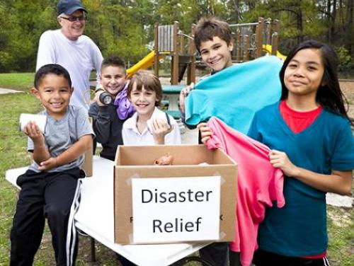
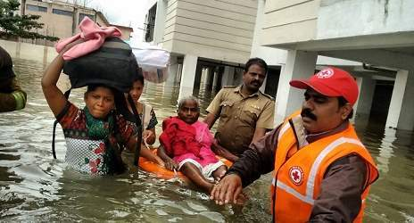

HUMANITARIAN RESPONSE TO EMERGENCIES

This project has been set up in collaboration with local Non Governmental organisations. This project is usually run in the disaster striken areas.The primary aim is to help the lower economic and social groups affected by the floods.

To contribute to this aim, volunteers will need to:
Provide immediate relief and response to the affected communities before additional support from the government and other agencies arrives
Reduce vulnerabilities of the communities by training the communities on first-aid, hygiene promotion, etc.,
Conduct vulnerability and capacity assessment of their own communities,
Support any other identified social issues that contribute to the development of the communities
After the emergency phase of a response has been completed, we turn to helping people recover and addressing their community needs. Working together with community leaders,
government and relief agencies, we organize and execute recovery strategies that include:
- Building temporary shelters.
- Providing emergency financial assistance in the immediate aftermath of a disaster.
- Distributing financial assistance for households that need extra help in the long-term.
- Providing grants for community-based recovery services.
To Join our community
JOIN US